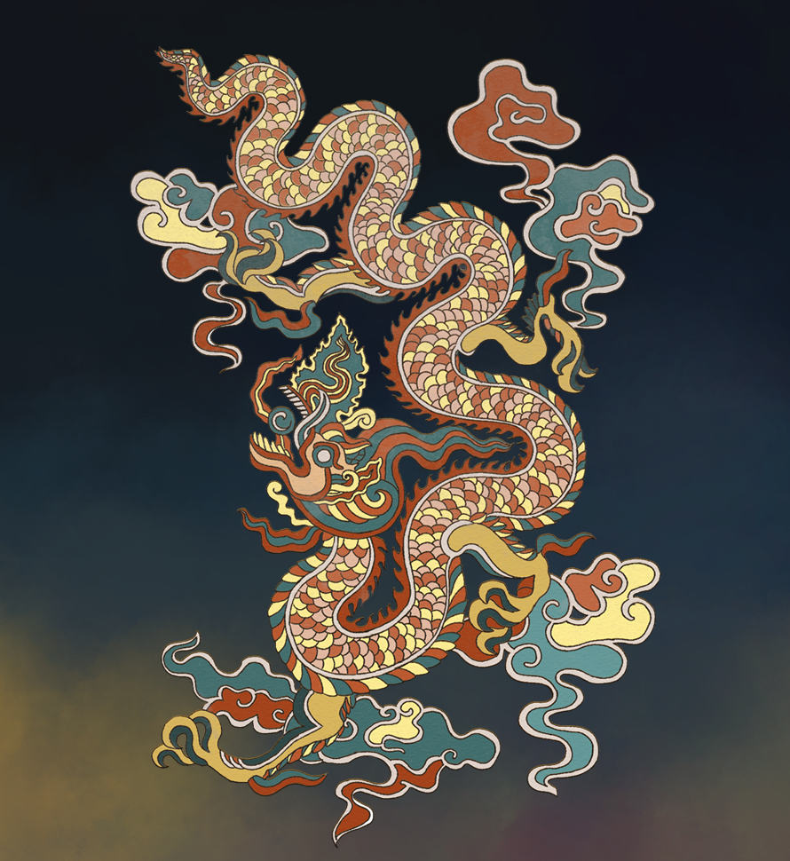

Chào các bạn đã đến với website Thiên Đô Chiếu.
Việt Nam có một nền văn hoá, lịch sử dân tộc đa dạng và đặc sắc mà mỗi người trong chúng ta luôn tự hào khi được nhắc đến.
Tuy nhiên, trong thời hiện đại ngày nay, dường như việc học Lịch Sử trong các lớp học, trường học lại đang là một vấn đề đáng được quan tâm khi các buổi học không còn được thú vị nữa. Thay vào đó là một áp lực là phải học thuộc bài trong khi các phương pháp giảng dạy hiện nay chưa thực sự sinh động và dễ tiếp thu cho bạn học sinh.
Nhận thấy vấn đề đó, chúng mình đã quyết định xây dựng một website về lịch sử, văn hoá dân tộc để giúp mọi người có thể tiếp thu dễ dàng hơn những net văn hoá truyền thống của đất nước.
Việt Nam có một nền văn hoá, lịch sử dân tộc đa dạng và đặc sắc mà mỗi người trong chúng ta luôn tự hào khi được nhắc đến.
Tuy nhiên, trong thời hiện đại ngày nay, dường như việc học Lịch Sử trong các lớp học, trường học lại đang là một vấn đề đáng được quan tâm khi các buổi học không còn được thú vị nữa. Thay vào đó là một áp lực là phải học thuộc bài trong khi các phương pháp giảng dạy hiện nay chưa thực sự sinh động và dễ tiếp thu cho bạn học sinh.
Nhận thấy vấn đề đó, chúng mình đã quyết định xây dựng một website về lịch sử, văn hoá dân tộc để giúp mọi người có thể tiếp thu dễ dàng hơn những net văn hoá truyền thống của đất nước.
